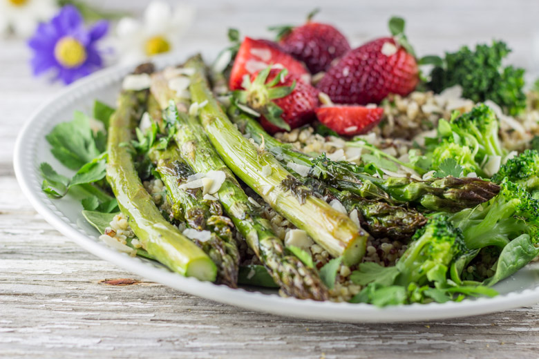
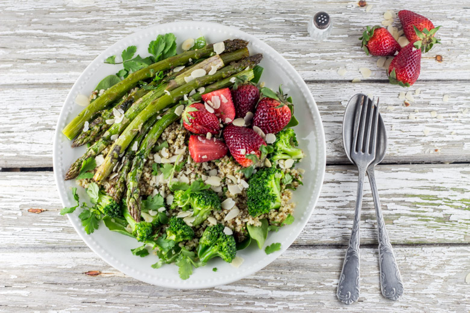

Salade asperges quinoa brocolis fraises – sauce tahine

C’est la saison des asperges et de jolies gariguettes se font sentir sur les étals des marchés alors pour l’occasion voici une salade asperges, fraises, brocolis et quinoa (entre autres^^)
Pour moi beau temps et bonnes salades sont indissociables (tellement agréable et rapide à faire) et pour le moment côté météo à Bordeaux nous avons été gâtés! Dernièrement, avec toutes les belles asperges qui arrivent j’avais très envie d’en cuisiner. Bizarrement habituellement je préfère les asperges blanches mais quand j’ai vu ces magnifiques asperges vertes (ça existe le racisme d’asperges?) je n’ai pas pu m’empêcher de les acheter et ce malgré les grimaces de mon chéri. Elles étaient belles, bien vertes, prêtes à être consommées. Les asperges vertes ont tout de même un goût assez particulier, assez prononcé comparées aux autres et j’avais un peu peur que ce goût soit trop présent dans ma salade asperges/ fraises mais finalement c’est passé tout seul et les grimaces aussi. Ces asperges doivent leur couleur verte à la lumière. En effet, on les laisse sortir de terre et l’exposition à la lumière du soleil leur confère cette belle couleur verte synonyme de chlorophylle. Pour bien choisir vos asperges vertes, il faut qu’elles soient bien droites, bien fermes, brillantes et avec une pointe assez serrée. Habituellement, elles sont cuisinées à la vapeur ou dans un faitout rempli d’eau bouillante mais vous verrez plus bas que je les ai cuisiné différemment et c’était délicieux 🙂
Vous trouverez donc dans cette salade, des asperges mais aussi du quinoa, du brocoli, des fraises, quelques pousses d’épinards, un peu d’amandes effilées le tout assaisonné d’une délicieuse sauce au tahine. Pour ceux qui ne connaissent pas le tahiné (aussi tahin, tahini..), il s’agit d’une crème de sésame, utilisée notamment dans la cuisine Orientale dans des recettes comme le houmous par exemple mais il peut être également utilisé dans des sauces pour parfumer un plat. Vous pouvez en trouver dans des épiceries Orientales ou dans n’importe quel hypermarché au rayon « cuisine du monde ».
J’espère que cette recette vous plaira autant qu’elle a pu nous plaire et je la trouve vraiment parfaite pour les beaux jours actuels.
Ingrédients
- Quinoa - 1 verre
- Eau - 2 verres
- Asperges vertes - 12
- Brocolis - 150 g
- Fraises - 125g
- Amandes effilées - 1 poignée
- Pousse d'épinards (facultatif) - 2 poignées
- Huile d'olive
- Coriandre
- Sel, poivre
- Tahine - 3 càs
- Eau - 3 càs
- Huile d'olive - 2 càs
- Moutarde en grains - 1 càc
- Vinaigre balsamique - 1+1/2 càs (selon vos goûts)
Instructions
- Cuire le quinoa. Dans une casserole, verser l'eau, portez à ébullition et verser le quinoa Ramener sur feu moyen Laisser cuire 18-20 minutes à couvert Retirer du feu et laisser le quinoa couvert pendant 5 minutes. Remuer rapidement avec une fourchette et laisser refroidir
- Pendant ce temps, préchauffez votre four à 210 degrés.
- Détailler le brocoli en fleurettes
- Plongez les dans de l'eau bouillante salée pendant 1 minute et sortez les à l'aide d'un écumoire
- Placer les asperges sur une plaque allant au four et arrosez les d'huile d'olive, poivrez et salez les
- Retournez les pour qu’il y est bien du poivre, du sel et de l’huile d'olive partout
- Laisser cuire 20 minutes au four préchauffé Dix minutes avant la fin de cuisson, ajouter les fleurettes du brocoli et arrosez les légèrement d'huile d'olive
- En fin de cuisson, retirer et laisser refroidir
- Laver les fraises et coupez les (ou non) en morceaux
- Préparer la vinaigrette Mélanger tous les ingrédients dans un petit bol et mélanger jusqu'à obtenir une consistance lisse et homogène. Réserver
- Par assiette, déposer une poignée de pousses d'épinards, recouvrir de quinoa puis déposer les asperges d'un côté, les fraises de l'autre et dispersez les brocolis un peu partout et ajouter un peu de coriandre fraîche
- Verser la sauce au tahine un peu partout et c’est prêt!


Les tips de la communauté
Salade colorée bien reçue comme plat de saison équilibré avec sauce tahini originalité. L'association asperges-fraises et la sauce au sésame sont appréciées pour le bon équilibre sucré-salé.
Astuces
- Sauce tahini apporte saveur riche et originalité au plat
- Asperges fraîches donnent le meilleur résultat (texture et goût)
- Vinaigrette sucrée se marie parfaitement avec les ingrédients
Variantes suggérées
- Mangue peut être remplacée par autre fruit saisonnier si non disponible
Ajustements signalés
- que je me penche dessus. Gros bisous et profite bien du soleil !